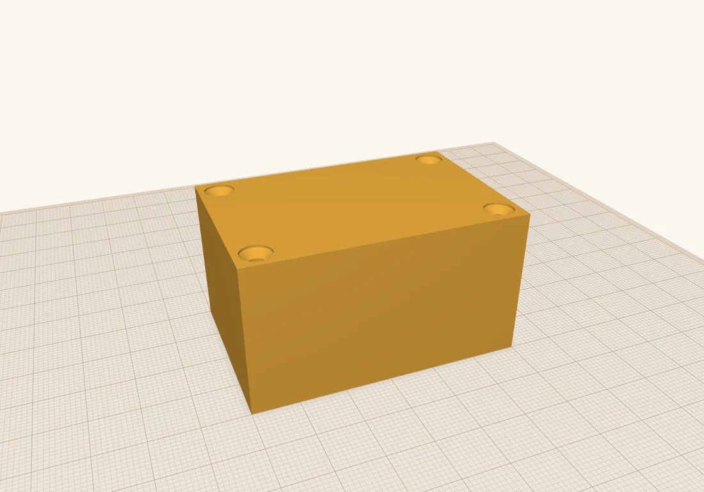
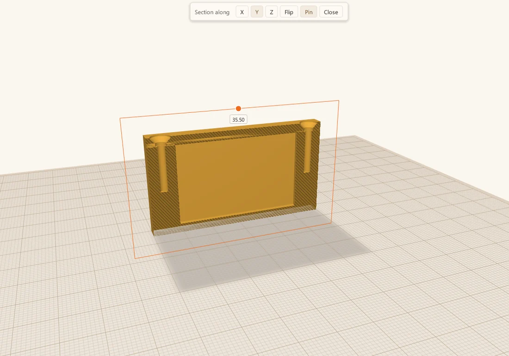
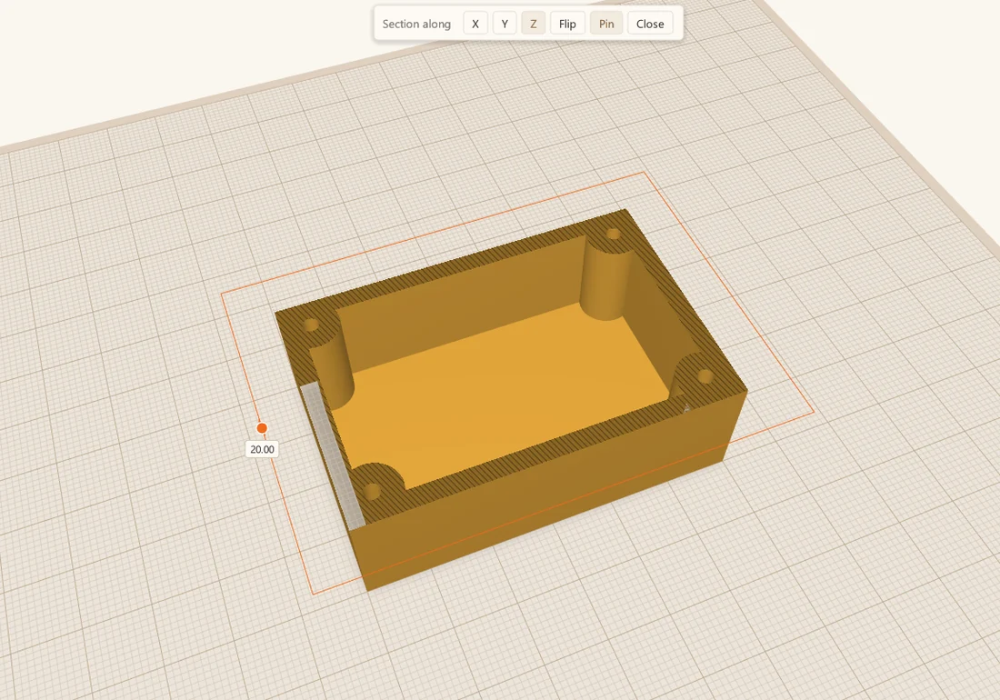
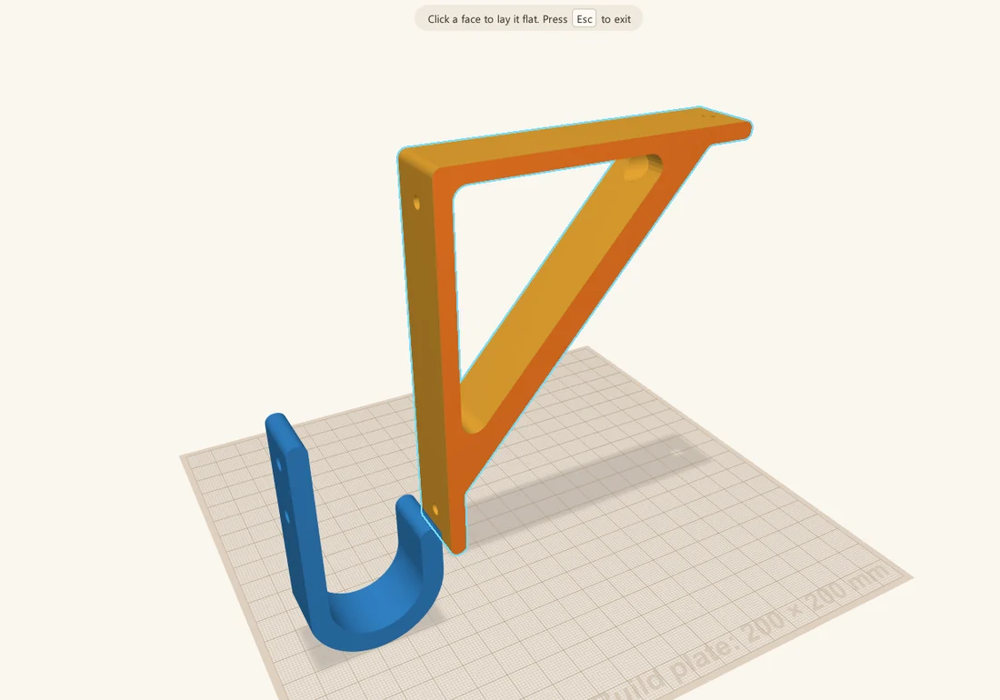
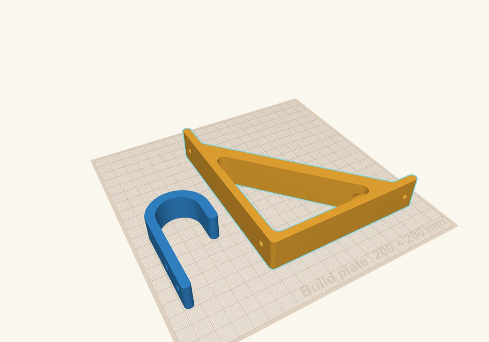
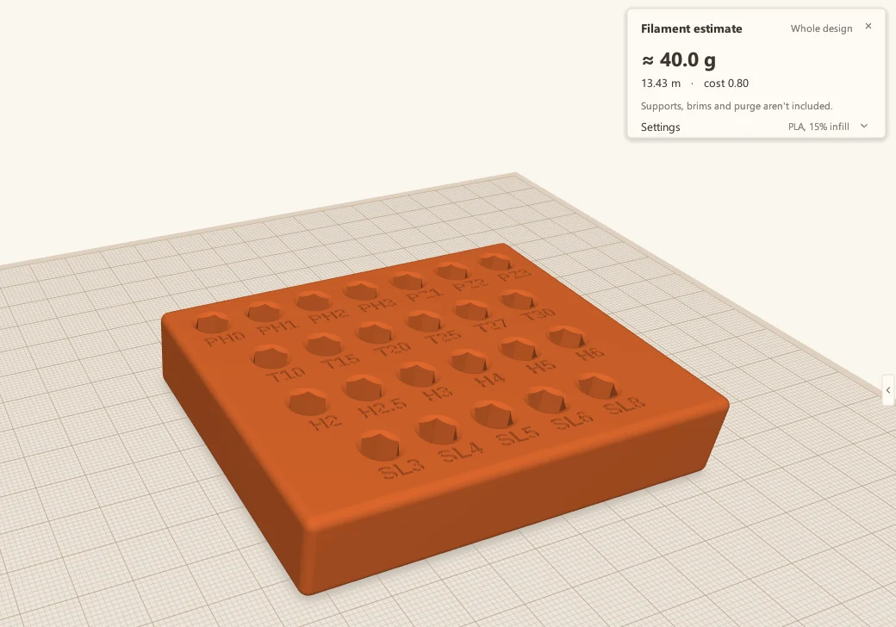
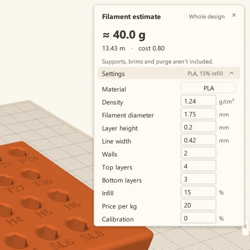

Three tools for people who actually print
Look inside a part, lay it flat for printing, and see what it'll cost in filament, all without leaving the CAD program.
 Scotti
Scotti
· 4 min read
I'm a 3D printing enthusiast, and I built ScottiCAD for the parts I print. So it has a few tools that most CAD programs don't, or that hide behind a steep learning curve. Here are the three I use most.
Section view
Cut through a design with a movable plane and see what's inside.
Lay flat
Click any face and it turns the part to sit on that face, ready to print.
Filament estimate
Grams, metres and cost, right in the CAD program.
Section view: look inside
As makers, we often need to see inside our models: the pockets, the mounting holes, the flexures in a print-in-place joint. Before ScottiCAD, I'd export the design and open it in my slicer just to have a look.
Now I use section view. Press Shift+K, or click its button in the toolbar, and ScottiCAD cuts the design open with a plane I can move. Drag the dot on the plane to slide it through the part. The bar at the top switches the cut between the X, Y and Z axes, Flip shows the other side, and Pin keeps the cut in place while I select and change things. It only changes the view: the design itself isn't touched.
Here's the project box from How I build a project box, closed up with its lid on. From the outside, there's no way to tell whether the screws will line up.

Cut along X, through the two posts at one end, and you can see the whole path of each screw: the countersink in the lid, the hole through it, and the pilot hole running down the middle of the post below.

Along Y, through the posts on one side, I can check the other direction and see how deep the pilot holes go.

And along Z, a slice part way up, seen from above, shows the walls, the four posts and the pilot holes in their middles. It's a quick way to check wall thickness.

Lay flat: design one way, print another
Every slicer has this one. CAD programs often don't. We need our parts sitting on the build plate the right way up for printing, but that isn't always the best way to design them. Sometimes I design a part on its side, or upside down, or the way it'll sit when it's in use.
Take this wall hook and shelf bracket. I think about them standing up, the way they hang on the wall.
But that's the worst way to print them. A printed part is weakest between its layers, so a hook printed standing up tends to snap right where the arm leaves the back plate. With the part on its side, the load runs along the layers instead of across them, and no supports are needed.
So I press Shift+D and point at the face I want on the build plate. ScottiCAD highlights it.

Click, and the part turns so that face sits flat on the build plate.

Filament estimate: what will it cost?
The last one is the filament estimate. I didn't build a whole slicer into ScottiCAD, so this is an approximation, but how cool is it to see how much filament a part needs, and what it'll cost, right in the CAD program, while you're still deciding how big to make it?
Click the spool button in the toolbar and the estimate appears in the corner. Here's the screwdriver bit holder from the examples: about 40 g of PLA, 13.4 m of filament, 80 cents at $20 a kilo. Select some shapes and it estimates just those; for a multicolour design, it breaks the total down by colour too.

Open Settings in the panel and you can tune the estimate to the way you print: the material (PLA, PETG, ABS, ASA, TPU, PC or nylon, each with its density), the filament diameter, layer height, line width, the number of walls and top and bottom layers, the infill, and the price per kilo.

There's also a calibration setting, a percentage added to every estimate. Slice a couple of your own parts, compare the slicer's numbers with ScottiCAD's, and set the difference. After that, the estimate tracks your printer pretty closely. Supports, brims and purge aren't included, so for parts that need a lot of support, add a bit on top.
Less back and forth
Each of these saves me a trip out of the design and into the slicer, and that adds up. I can check the inside of a part, set it up for printing, and see what it costs while I'm still designing it, instead of finding out afterwards.
More from Scotti's Corner
- Your first ScottiCAD script 30 October 2026
- Putting text on your 3D prints 30 October 2026
- Raspberry Pi mounts that line up the first time 25 October 2026
- How I build a project box 24 October 2026
- Why I wrote ScottiCAD 24 October 2026